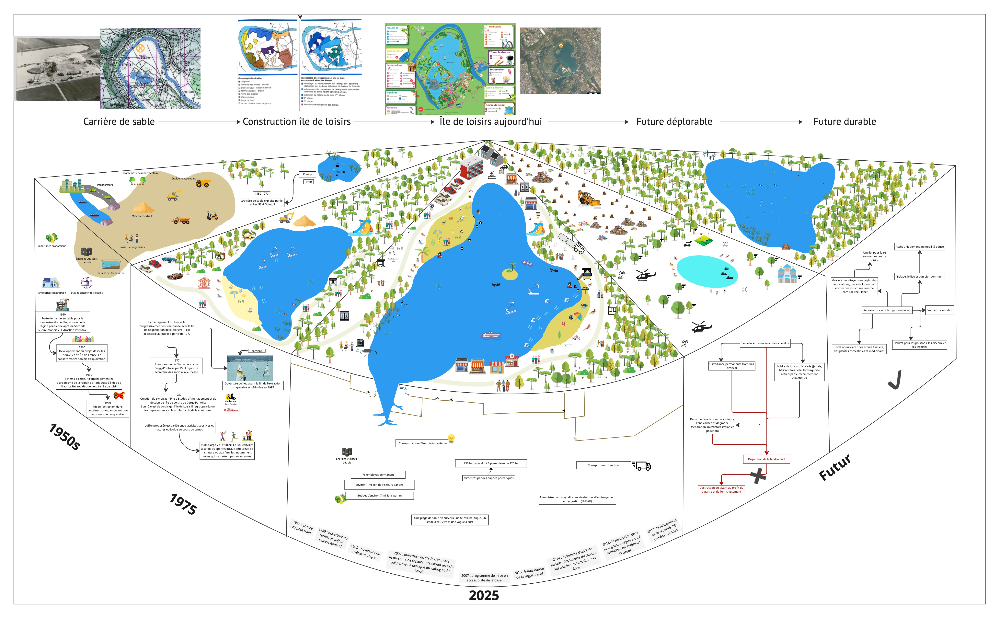

Est-ce qu'une île de loisir est toujours soutenable et souhaitable en 2025 ?
Par Célia FEUILLET, Coline FISCHER, Marion BOINNET, Lucile HELLEC et Elsa GALLAND-LUGBULL

Introduction
Le projet de l'île de loisirs de Cergy-Pontoise a vu le jour en 1965, dans le cadre de l'aménagement et de l'urbanisme de la région parisienne. Ce grand espace de 250 hectares, inauguré en 1977, a été aménagé sur d'anciennes sablières, transformant ainsi des sites d'extractions en lieux dédiés aux activités divertissantes et sportives. Ce phénomène n'est pas un cas isolé. Plusieurs îles de loisirs ont été créées en Île-de-France sur des terrains issus de l'exploitation industrielle. Par exemple, l'île de loisirs du Port aux Cerises, située à Draveil, a été aménagée sur un site autrefois utilisé pour le dépôt de déchets du BTP. De même, à Romainville, une base de loisirs a été développée sur d'anciennes carrières, intégrant des bâtiments historiques comme le château de Romainville et celui de la Seigneurie à Pantin. Ces initiatives montrent une certaine volonté de reconvertir des espaces industriels, délaissés petit à petit, en zones de loisirs, contribuant ainsi à l'attractivité des villes nouvelles et offrant aux habitants des espaces verts et des infrastructures dédiées aux loisirs. Cependant, à l'heure actuelle, il est légitime de s'interroger sur la pertinence et la durabilité de ces aménagements. Les défis environnementaux, les besoins évolutifs des populations urbaines et les contraintes économiques invitent à réévaluer l'impact et la gestion de ces îles de loisirs. On peut donc se poser la question suivante :
Est-ce qu'une île de loisir est toujours soutenable et souhaitable en 2025 ?
Cartographie du milieu
Explications
Cette cartographie représente l'Ile de Loisir de Cergy Pontoise à travers ses changements dans le temps, passé et futur. Nous avons décidé de créer une cartographie sous forme de demi-camembert pour représenter plusieurs choses. D'abord l'apparence et les utilisations de chacune des étapes du lieu sur la partie supérieure de l'Ile de Loisir, au cours du temps. Sur la partie inférieure se trouve la partie dite "face cachée" du lieu, c'est-à-dire plus de détails sur des événements clés mais également son fonctionnement, l'intervention des différents acteurs et leur attachement au site.La cartographie se lit de gauche à droite, dans l'ordre chronologique depuis les années cinquante, lorsque l'île de loisir n'était pas encore créée, en passant par sa phase de création à la fin des années soixante-dix et son état actuel en 2025 jusqu'à deux futurs probables. Les différentes périodes sont divisées en parts du camembert.Nous avons choisi ce format pour plusieurs raisons. Dans un premier temps pour regrouper nos différentes cartographies initiales avec l'aspect matériel, humain, les différentes parties prenantes et l'historique du lieu. L'idée de deux parties une qui illustre l'apparence pour que le lieu soit plus parlant et visuel et une partie qui explique davantage les dynamiques qu'on ne peut pas illustrer comme l'attachement, les parties prenantes ou encore les évènements marquants ou relatifs au fonctionnement.Nous voulions représenter les lieux sur différentes périodes pour illustrer et mieux repérer les évolutions et tendances à travers le temps1950s : Avant d’être ce qu’elle est aujourd’hui, l’île de loisirs était un simple étang naturel. Dans les années 1950 à 1970, le site a été transformé en une grande sablière à ciel ouvert pour alimenter les chantiers de la région parisienne en matériaux de construction. Le paysage était alors dominé par des fosses d’excavation et des collines de sable, dans un cadre strictement industriel, représenté visuellement sur la cartographie. Le sable extrait servait surtout à produire du béton, acheminé par camions, trains et péniches (à gauche du schéma). Cette activité a profondément modifié l’environnement, jusqu’à son abandon dans les années 1970, au profit d’un projet de reconversion en base de loisirs dans le cadre des villes nouvelles.
A la fin des années 70, les aménagements commencent petit à petit en même temps que l'exploitation de sable. Les étangs de Cergy-Neuville, complètement façonnés par la main de l'homme, ils ont été réellement inaugurés en 1977. Rapidement très appréciée des habitants, le lieu se développe constamment, de nouvelles activités sont ajoutés au fil des années. Le lieu plaît et est fréquentée par tous types de personne, adolescents, familles, notamment celle qui ne partent pas en vacances, sportifs ou randonneurs, il permet à tout le monde de profiter d'un cadre naturel agréable non loin de chez eux.
Aujourd'hui, l'île de loisirs est très développée et bien ancrée sur le territoire. Elle propose une grande variété d'activités : téléski nautique, kayak et rafting sur le stade d'eau vive, vague à surf, accrobranche, voile, escalade, tir à l'arc... Très fréquentée par les visiteurs, la nature et la biodiversité restent présent sur le site C’est un lieu de rassemblement pour les habitants, mais il attire également des touristes, notamment grâce à sa proximité avec Paris. Sa gestion nécessite du personnel, de l'énergie et des moyens financiers, elle est souvent critiquée notamment par la Chambre régionale des comptes en 2018 concernant les fragilités du modèle des îles de loisirs.
Dans cette dystopie, l'île de loisirs de Cergy-Pontoise s’est transformée en un espace ultra-sécurisé, réservé à une élite aisée. Caméras et drones permanents encadrent un environnement entièrement artificialisé, où villas, jetskis et lacs turquoise remplacent les espaces naturels. Tandis que la façade visible offre un décor luxueux et esthétique, l’envers du décor, soigneusement dissimulé, est devenu une forêt de souches d'arbres et un dépotoir. La biodiversité a été sacrifiée, ne subsistant que sous forme de plantations décoratives destinées à séduire les visiteurs privilégiés.
Dans un futur durable, l'île de loisir aurait évolué en un écosystème vivant. Avec une forêt nourricière, on retrouve également des habitats pour les animaux avec un grand développement de la faune et de la flore. Le lieu est devenu un bien commun. Il n'y a plus d'artificialisation des sols, on y accède seulement grâce aux mobilités douces. Il y a un ponton pour aller se baigner dans le lac. Des éoliennes pour créer de l'énergie pour la ville de Cergy.
Ainsi, est-ce qu'une île de loisir est toujours soutenable et souhaitable en 2025 ?Aujourd'hui, la construction d'une île de loisir n'est pas souhaitable, cela utilise beaucoup d'énergie, urbanise en partie d'un lieu qui pourrait être développé pour la biodiversité. Le mieux serait de proposer un choix plus restreint d'activités et de laisser plus de zones s'auto-réguler sans besoin de l'intervention de l'homme. Cependant, le lieu à un réel impact social sur les habitants en leur permettant l'accès à un grand espace naturel, sportif, varié et gratuit.
Sources
- https://fr.wikipedia.org/wiki/%C3%8Ele_de_loisirs_de_Cergy-Pontoise
- https://www.institutparisregion.fr/nos-travaux/publications/les-anciennes-carrieres-souterraines-en-ile-de-france/
- https://www.lemoniteur.fr/article/romainville-une-base-de-loisirs-sur-les-carrieres.181864
- https://cergy-pontoise.iledeloisirs.fr/histoire/
- https://cergy-pontoise.iledeloisirs.fr/
- https://13commeune.fr/actualite/lile-de-loisirs-lile-aux-tresors/
- https://www.leparisien.fr/val-d-oise-95/neuville-sur-oise-95000/cergy-pontoise-38-ans-de-baignade-a-l-ile-de-loisirs-06-07-2015-4923609.php
- https://www.ina.fr/ina-eclaire-actu/video/pac00008102/la-base-de-loisirs-de-cergy-pontoise
- https://www.ina.fr/ina-eclaire-actu/video/caa7701351501/cergy-ville-nouvelle
- https://fr.wikipedia.org/wiki/Pierre_Mazeaud
- https://fr.wikipedia.org/wiki/Maurice_Herzog#Politique